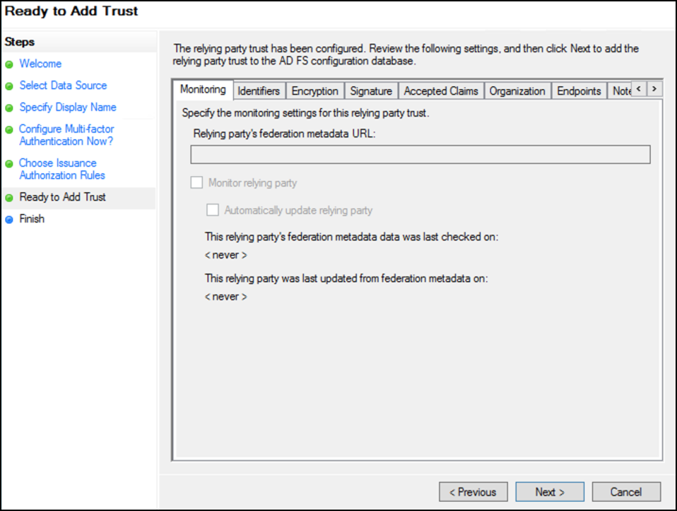
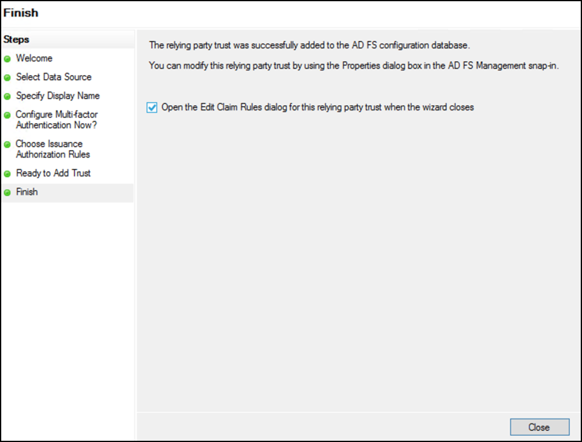
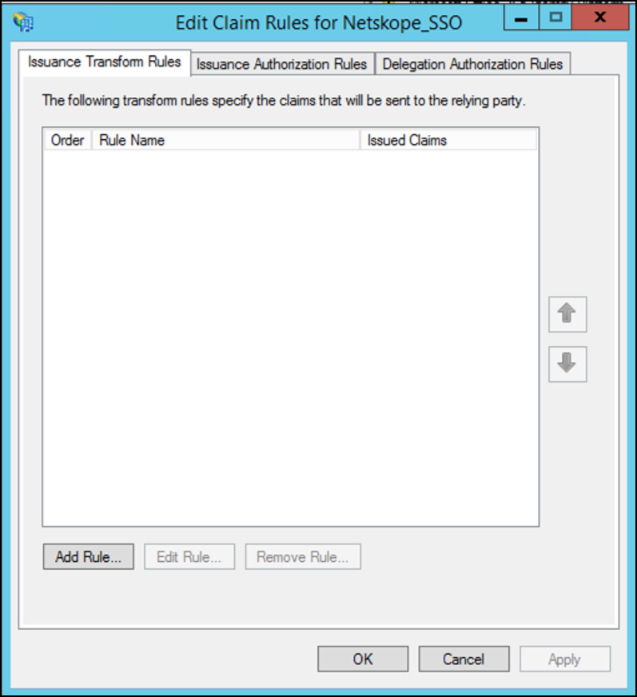
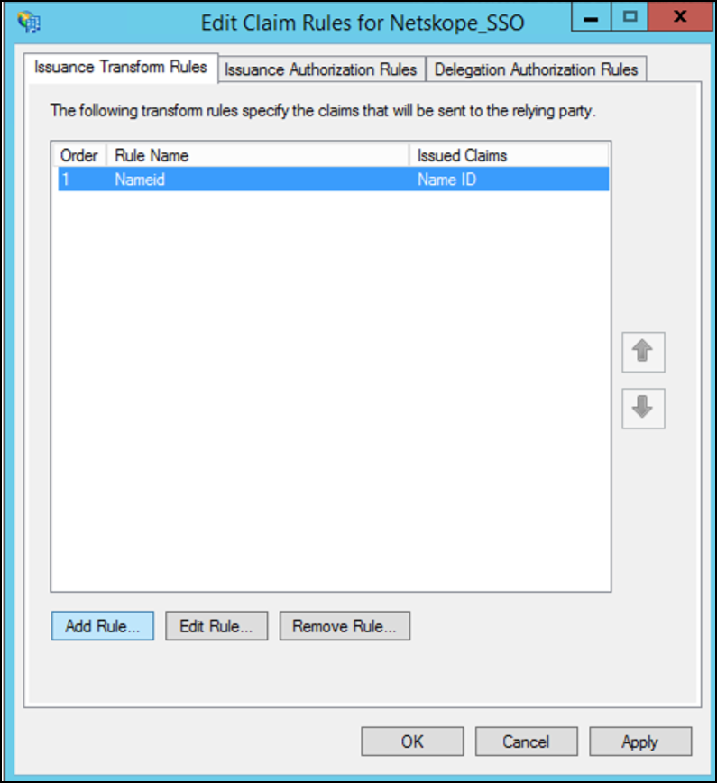
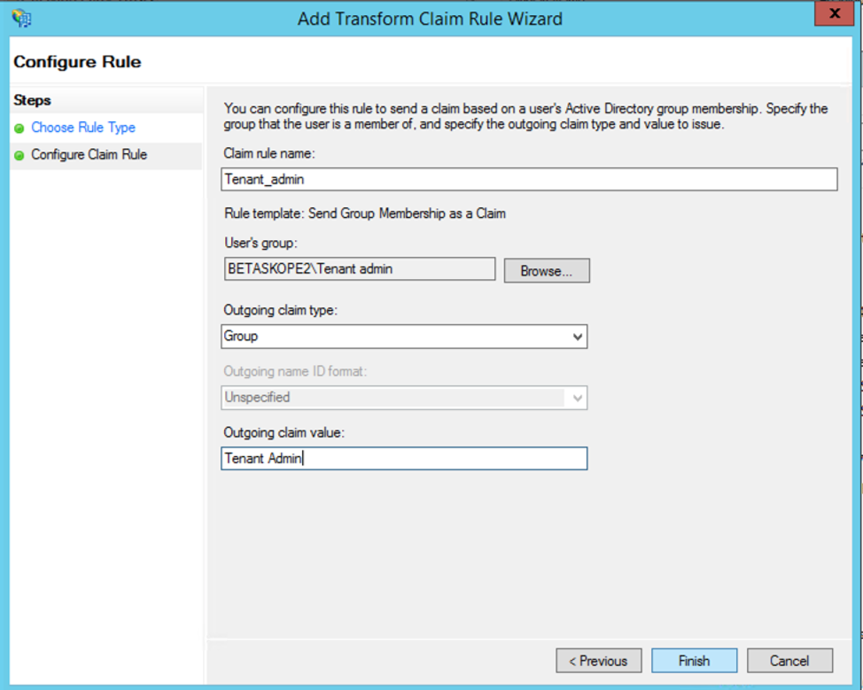
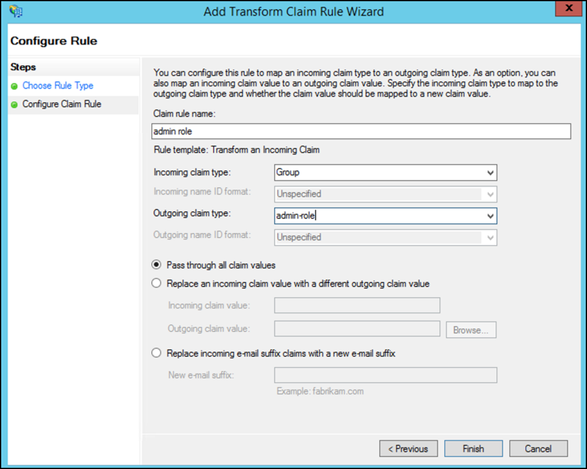
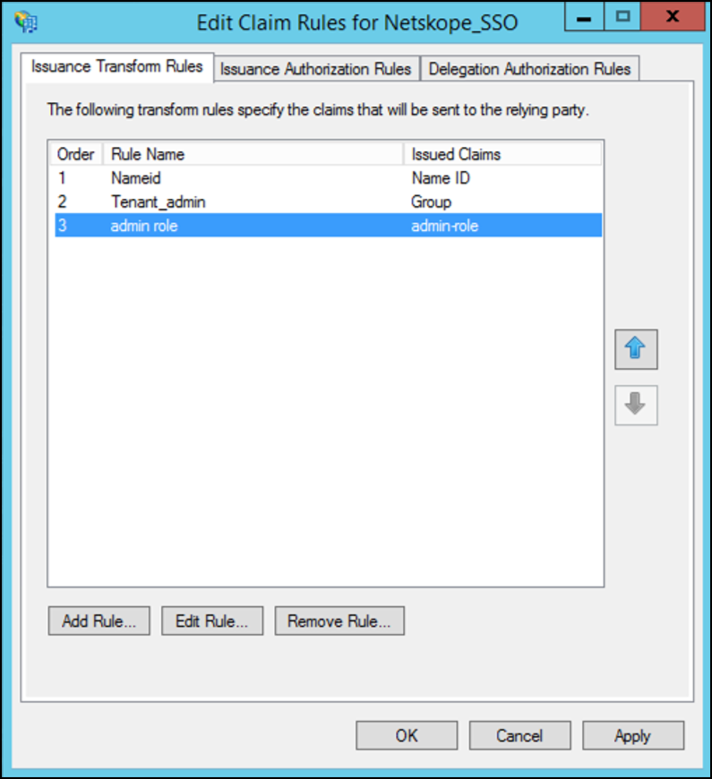

Configure ADFS for Netskope SSO using the Metadata File
To complete these steps, you need the Netskope Metadata file. Go to Settings > Administration > SSO, and under Netskope Settings, click Download Netskope Metadata. Save the file for later reference.
Add the Netskope admin console as a relying party trust. Open the ADFS Management window and right click the Relying Party Trusts folder, and then click Add Relying Party Trust.

Enable Claims aware and click Start.

For Select Data Source, select Import data about the relying party from a file and browse to select the file. When finished , click Next.

For Display name, enter a meaningful name, like Netskope_SSO, and then click Next.

For Configure Multi-factor Authentication Now, enable the I do not want to configure.... option, and then click Next.

For Choose Insurance Authorization Rules, enable the Permit all users to access..., option, and then click Next.

For Ready to Add Trust, the wizard displays the configured settings. Click Next.
 Enable the Open the Edit Claims dialog ... checkbox and click Close.
 In the Edit Claim Rules dialog, click Add Rule.
 For Choose Rule Type in the Add Transform Claim Rule Wizard, select Send LDAP attributes as Claims as the Claim Rule Template so claims contain LDAP attribute values from the AD attribute store. Click Next.

For Configure Claim Rule, enter and select the following:
Enter a name for the claim rule.
For Attribute Store, select Active Directory.
Map the LDAP attributes that represent the user’s login name to a field in the outgoing claim. In the LDAP attribute column, select User-Principal-Name. In the Outgoing Claim Type column, select or enter Name ID. (Note that Name ID is entered as two words, with a space between them).

Click Finish.
Click Add Rule and add another Claim Issuance Policy rule.
 For Choose Rule Type, select Send Group Membership as a Claim, as the Claim Rule Template, and then click Next.

For Configure Claim Rule, enter and select the following:
Enter a name for the claim rule, like
Tenant_Admin.For User's Group, browse and select the AD group that will be mapped to the Tenant Admin role in the Netskope UI.
For Outgoing Claim Type, select Group.
For Outgoing Claim Value, enter
Tenant Admin.
 In this rule, users in the Tenant_admin group are mapped to the predefined Tenant Admin role on the Netskope UI.
Note
Create a group claim role for each role present in the Netskope UI under Administration, both predefined and custom, if those roles are being used.
Click Finish.
Add another Claim Issuance Policy rule. For Choose Rule Type, select Transform an Incoming Claim, as the Claim Rule Template, and then click Next.

For Configure Claim Rule, enter and select the following:
Enter a name for the claim rule, like
admin role.For Incoming Claim Type, select Group.
For Outgoing Claim Type, select admin-role.
Enable Pass through all class values.
 In this rule, users in the admin role group are mapped to the pre-defined Tenant Admin role on the Netskope UI. Click Finish.
In the Edit Claim Rules dialog, the Transform incoming rule should be the last rule. When so, click OK.
 Note
Configure further roles as needed.
Run the below PowerShell commands to disable the CRL Check:
PS C:\Users\Administrator> Set-ADFSRelyingPartyTrust -TargetIdentifier <org_key> -SigningCertificateRevocationCheck None PS C:\Users\Administrator> Set-ADFSRelyingPartyTrust -TargetIdentifier <org_key> -EncryptionCertificateRevocationCheck None
ADFS is now configured for Netskope SSO. Proceed to the Configure Netskope SSO for ADFS section to complete the integration.